Префектура Хиросима · Миядзима · святыни
Святилище Ицукусима: храм, который построили прямо в море
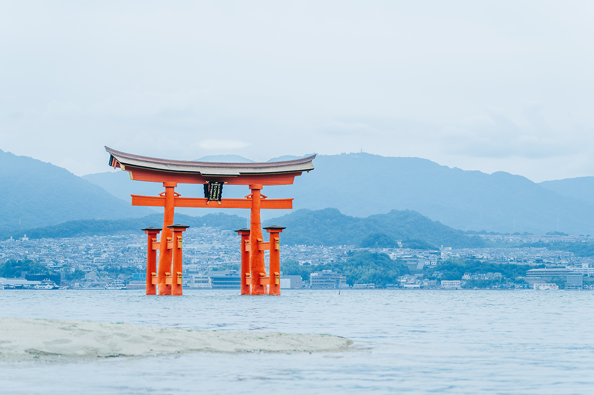
Остров Миядзима держит один из трёх самых известных пейзажей Японии. Алые тории и длинные галереи святилища поднимаются из самой воды, а дважды в сутки море отступает и к воротам можно подойти пешком. Разбираемся, почему храм оказался в море и как устроен его главный символ.
Святыня
Храм, стоящий на воде
Миядзима лежит во Внутреннем Японском море у берегов Хиросимы и входит в число трёх самых знаменитых пейзажей страны. В 2023 году на остров приезжали участники саммита «Большой семёрки» в Хиросиме, и после этого сюда потянулись ещё больше путешественников. Главное здесь, святилище Ицукусима, стоит не на берегу, а прямо в воде: волны захлёстывают сваи, галереи и алые ворота тории.
Море здесь живёт своим ритмом: примерно каждые шесть часов вода приходит и уходит. От галерей до большого тории около 160 метров, и в отлив это расстояние проходят пешком по мокрому песку, а в прилив ворота стоят по грудь в воде.
Святилище основали в 593 году, при императрице Суйко (554–628), одной из первых женщин на японском троне. Предание говорит, что местный вождь из рода Саэки выбрал это место, следуя за вороном, которого счёл посланцем богов. Постепенно сам остров стали почитать как божество, и селиться на нём долго не решались даже жрецы.
История
Киёмори Тайра и морская дорога
Свой нынешний вид святилище получило в XII веке. Киёмори Тайра (1118–1181), полководец, возвысившийся при дворе и прибравший к рукам морскую торговлю Внутреннего моря, служил здесь наместником и построил основу современных залов. В ту эпоху при дворе любили усадьбы с галереями и прудом перед ними, по которому катали лодки. Киёмори перенёс эту моду на остров, заменив пруд морем. Завезённые им музыкальные представления живут до сих пор в обрядекангэнсай, когда лодки с музыкантами обходят святилище по воде.
Позже судьбу храма решила война. В 1555 году у острова произошло сражение, в котором Мотонари Мори (1497–1571), властитель области Аки, разбил соперника и подчинил себе почти весь запад Хонсю. Победитель раскаялся, что сделал священный остров полем боя, и повелел заново отстроить большие ворота и привести в порядок залы.
До эпохи Эдо морем шла и главная дорога к храму: лодки входили в ворота и подплывали прямо к галереям, а берег служил продолжением святилища.
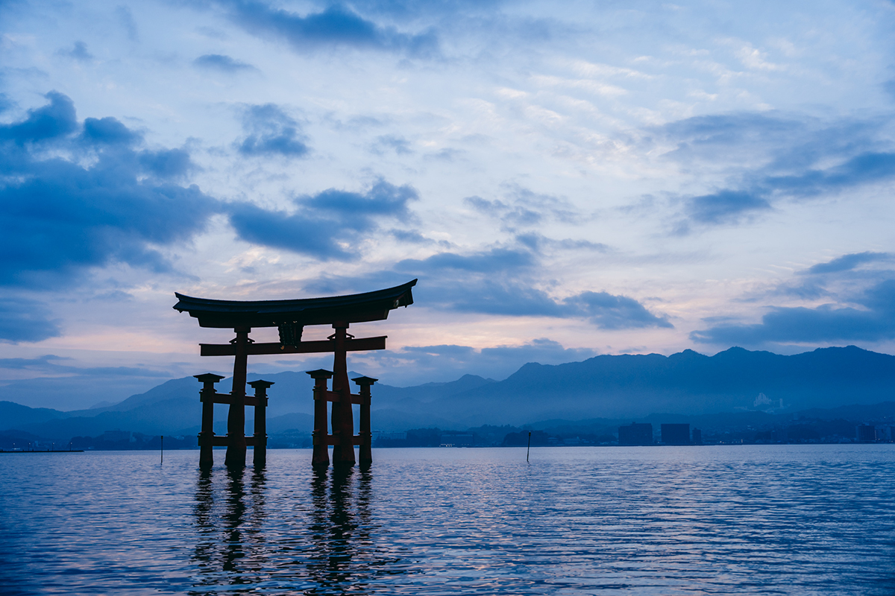
Архитектура
Как устроен большой тории
Нынешний большой тории уже девятый по счёту: первый появился ещё в эпоху Хэйан, и каждые новые ворота поднимали заново после тайфунов и обвалов. Высота ворот 16,6 метра, вес около 60 тонн. Самое удивительное в них то, что опоры не вкопаны в дно.
Вместо фундамента в песчаное дно забили сотни сосновых свай, утрамбовали грунт, уложили плоские камни, а уже на них поставили главные и дополнительные столбы. Ворота держатся собственным весом и точным расчётом. Верхние перекладины внутри полые и заполнены мелким камнем. Такая конструкция с двумя главными и четырьмя дополнительными столбами называетсярёбу-тории.
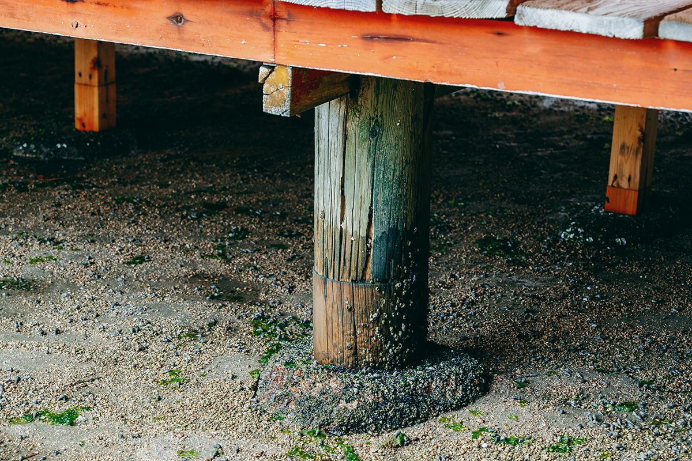
Галереи
Почему залы стоят над водой
Почему святилище вообще вынесли в море? Одна из версий проста: так не тревожили землю острова, который считали жилищем богов. Залы подняты над водой на сваях, но главный корпус поставили на чуть более высоком месте, и за все века тайфунов он ни разу не ушёл под воду.
Пол сцены хирабутай не прибит к столбам: если накатит большая волна, доски поддаются и гасят её удар, закрывая главный корпус. Галереи тянутся на 275 метров; в сильный прилив их заливает, поэтому в настиле оставлены зазоры, через которые вода уходит и не срывает доски.
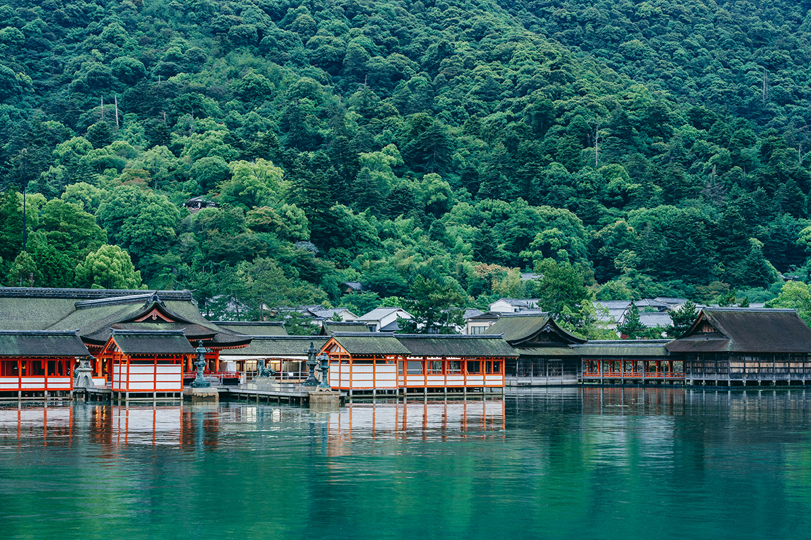
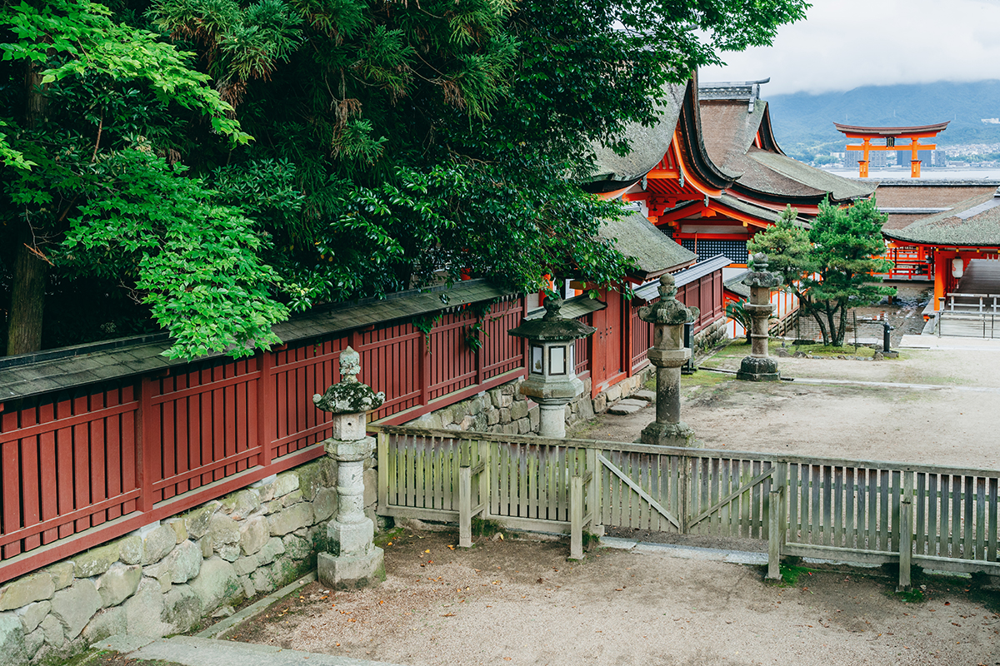
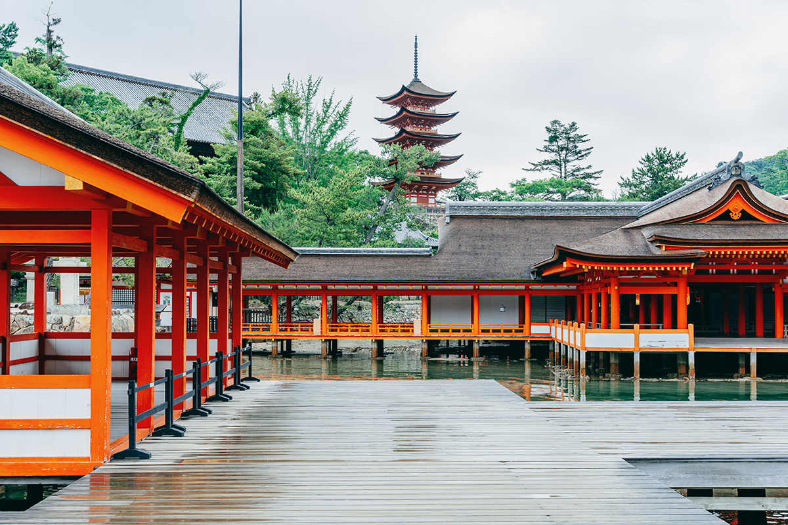
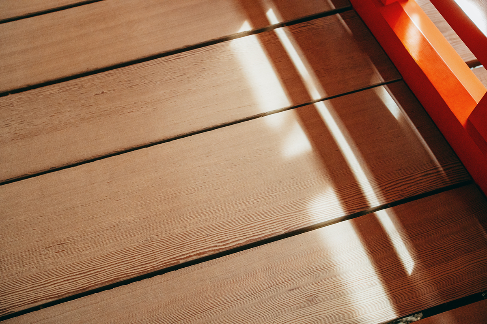
Рядом
Павильон без стен и красная пагода
Позади святилища, на холме, стоят два приметных здания. Павильон Сэндзёкаку, он же святилище Тоёкуни, начал строить Хидэёси Тоётоми (1537–1598), объединитель Японии, в 1587 году. Смерть полководца остановила работы, и здание так и осталось недостроенным: в нём нет ни одной стены. Площадь пола рассчитана примерно на тысячу татами, отсюда и имя, которое значит «павильон в тысячу татами».
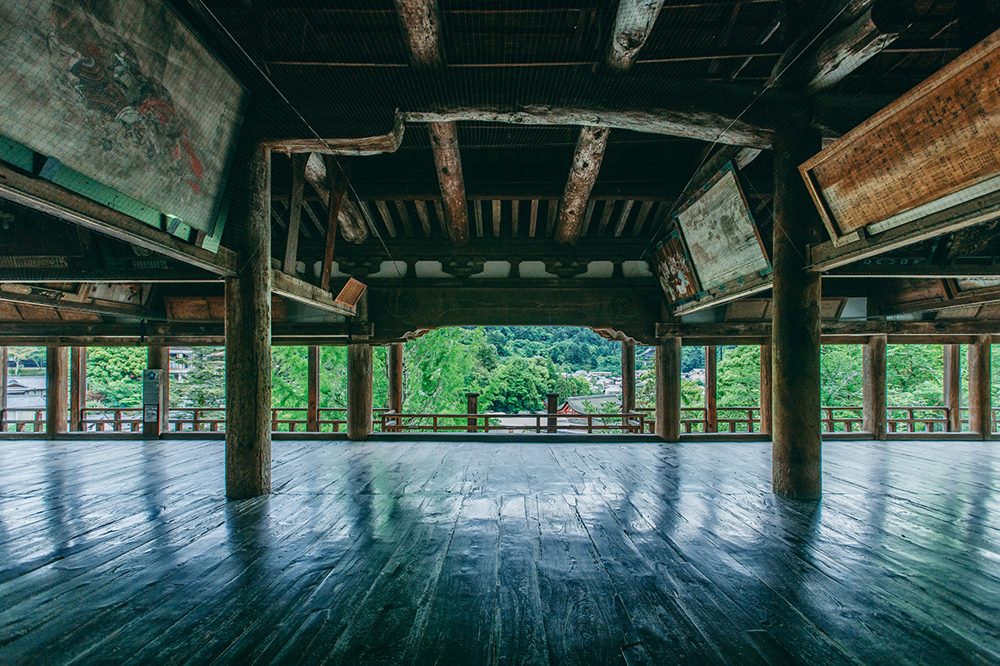
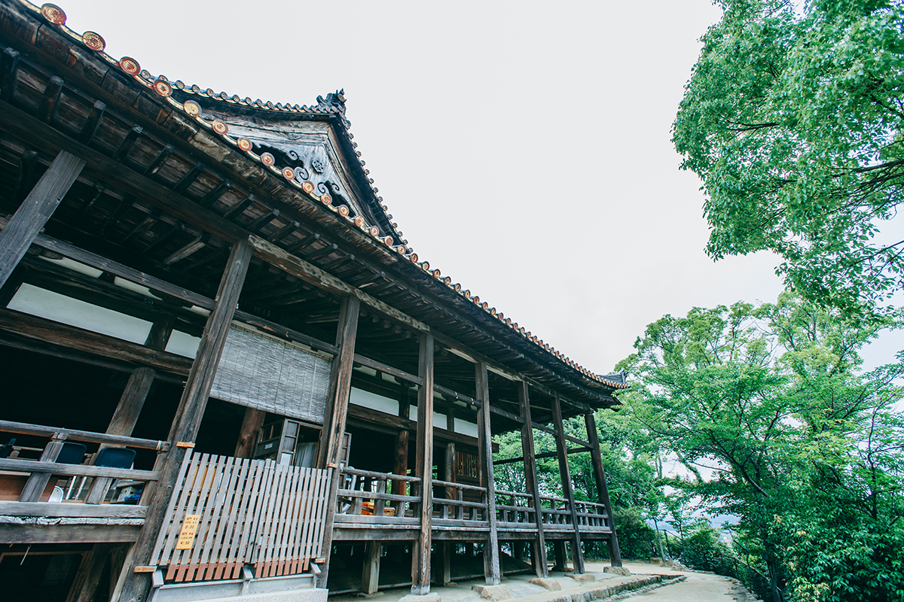
Рядом высится пятиярусная пагода, построенная в 1407 году. Её высота около 29 метров, а центральный столб не доходит до земли и укреплён только до второго яруса, поэтому при сильном ветре пагода слегка пружинит и не ломается.
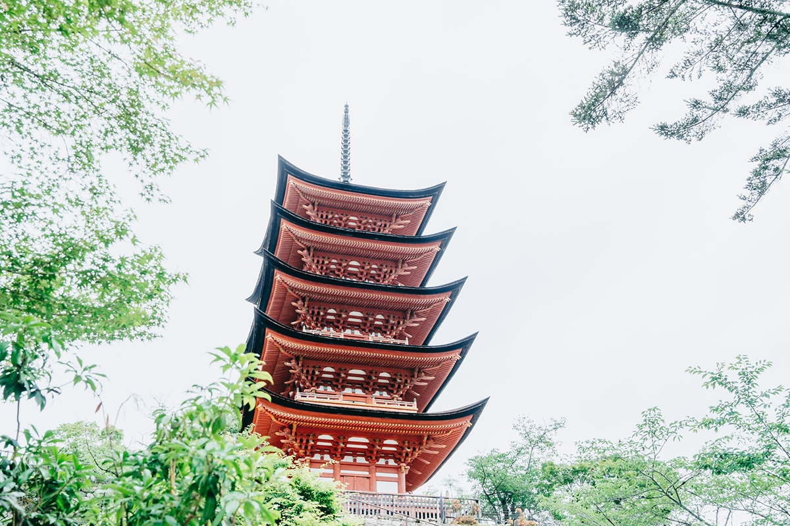
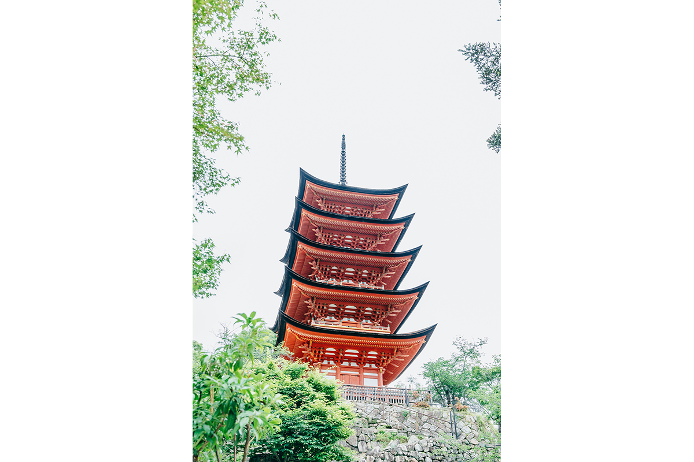
Когда ехать
Прилив и отлив
Лучший совет для поездки простой: посмотреть святилище дважды за день, в прилив и в отлив, потому что это два разных места. В прилив залы и ворота будто плывут, в отлив к большим ториям можно подойти вплотную и рассмотреть столбы и каменные основания.
Часы работы зависят от сезона, а вход платный. Пол в галереях сделан с зазорами для воды, поэтому в обуви на высоком каблуке легко застрять, и на это стоит обратить внимание.
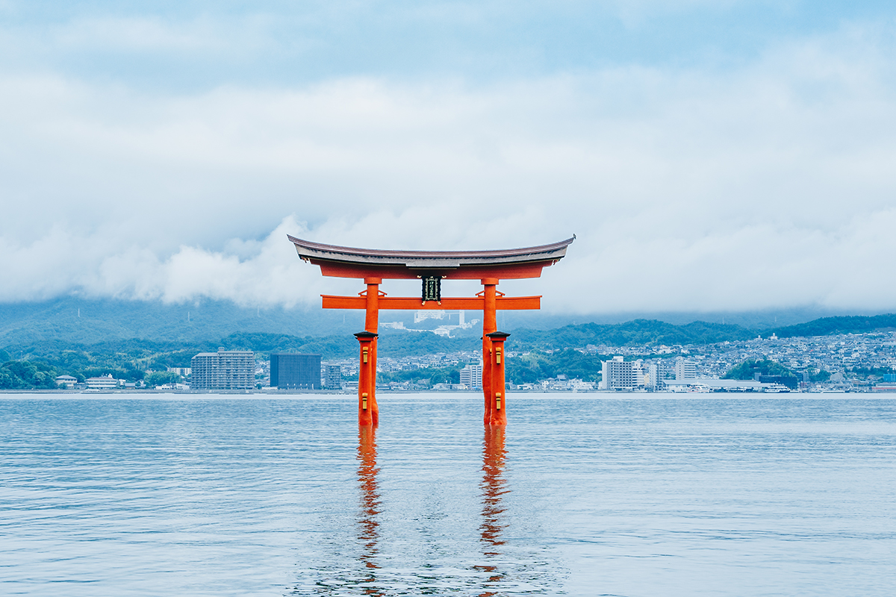
Святилище Ицукусима
- Адрес
- префектура Хиросима, Хацукаити, Миядзима, 1-1
- Телефон
- +81 829-44-2020
- Часы работы
- 6:30–18:00 с 1 марта по 14 октября; 6:30–17:30 с 4 января по конец февраля и с 15 по 30 ноября; 6:30–17:00 с 1 по 31 декабря; 1 января с 0:00 до 18:30; 2 и 3 января 6:30–18:30
- Цены
- взрослым 300 иен, старшеклассникам 200 иен, учащимся начальной и средней школы 100 иен; общий билет со сокровищницей 500 иен для взрослых
Павильон Сэндзёкаку, он же святилище Тоёкуни
- Адрес
- префектура Хиросима, Хацукаити, Миядзима, 1-1
- Телефон
- +81 829-44-2020
- Часы работы
- 8:30–16:30
- Цены
- взрослым 100 иен, учащимся начальной и средней школы 50 иен
Фото: Юта Того.